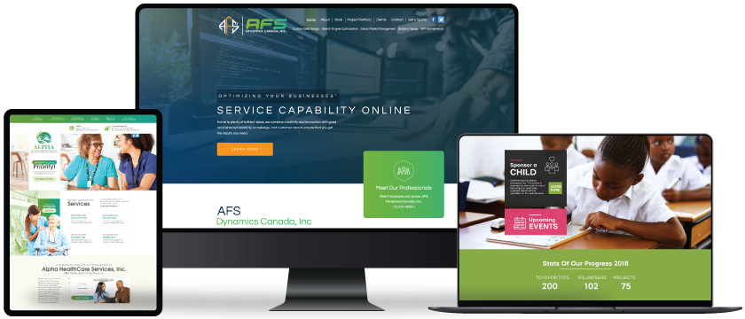
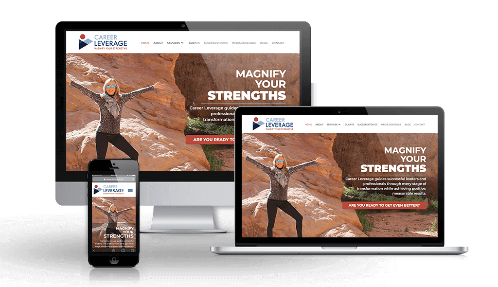
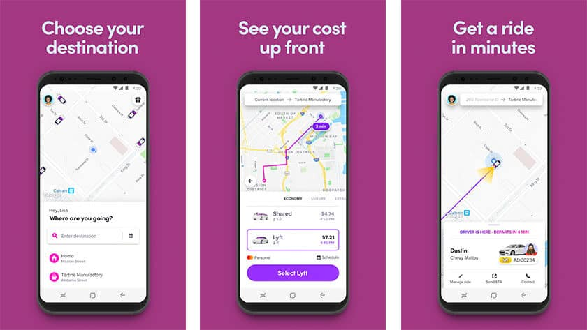
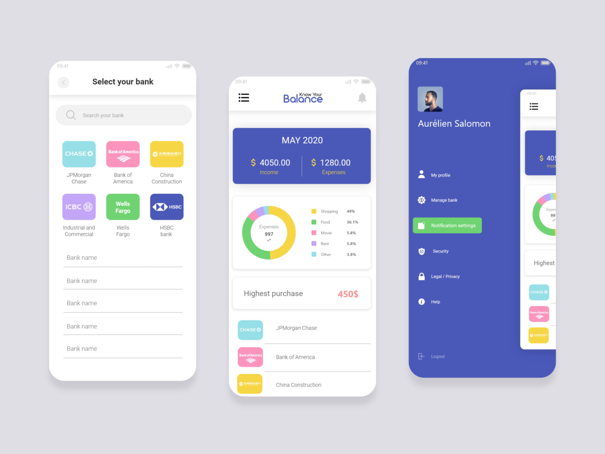
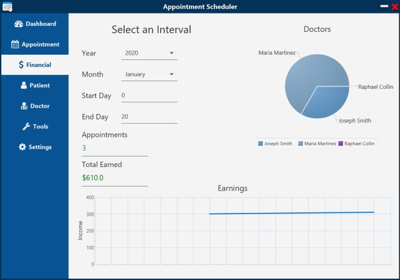

Website
Website merupakan kumpulan portofolio projek yang sudah saya kerjakan.Web portofolio merupakan sebuah platform yang berisi dokumentasi hasil karya seseorang atau perusahaan dan ditampilkan dalam bentuk website.
Consultan Website

Tujuan konsultan web adalah untuk memecahkan masalah klien mereka dengan mempertimbangkan kesuksesan bisnis. Sasaran pengembang adalah menulis kode untuk memenuhi spesifikasi proyek Anda. Seorang konsultan web mendengarkan. Seorang konsultan mempertimbangkan model bisnis, audiens, kompetisi, dan semua pertimbangan itu berperan dalam proyek yang sedang dikerjakan.
Carrer website

Situs web ketenagakerjaan adalah situs web yang berhubungan secara khusus dengan pekerjaan atau karier. Banyak situs web ketenagakerjaan dirancang untuk memungkinkan pemberi kerja memposting persyaratan pekerjaan agar suatu posisi diisi dan umumnya dikenal sebagai dewan kerja.
Apps
Aplikasi adalah suatu subkelas dari suatu perangkat lunak komputer yang memanfaatkan kemampuan komputer secara langsung untuk melakukan suatu tugas yang diinginkan pengguna.
Online Taxi

Pengertian transportasi online adalah pelayanan jasa transportasi yang berbasis internet dalam setap kegiatan transaksinya, mulai dari pemesanan, pemantauan jalur, pembayaran dan penilaian terhadap pelayanan jasa itu sendiri. Transportasi online adalah salah satu bentuk dari penyelenggara lalu lintas dan angkutan jalan yang berjalan dengan mengikuti serta memanfaatkan perkembangan ilmu pengetahuan (teknologi).
Finance

aplikasi keuangan pribadi, adalah salah satu aplikasi keuangan pribadi paling terkenal yang memberikan gambaran keuangan lengkap Anda di satu tempat. Setelah Anda menautkan kartu kredit dan debit ke akun Anda, Mint menarik transaksi Anda, mengelompokkannya dan menunjukkan bagaimana Anda menghabiskan uang Anda.
Desktop
Aplikasi Desktop adalah suatu aplikasi yang mampu beroperasi secara offline, tetapi kita harus menginstalnya sendiri pada laptop atau komputer.
Music

di jalur utama Bandung-Lembang, Farm House menjadi objek wisata yang tidak pernah sepi pengunjung. Selain karena letaknya strategis, kawasan ini juga menghadirkan nuansa wisata khas Eropa. Semua itu diterapkan dalam bentuk spot swafoto Instagramable.
Medical

beberapa teleskop, antara lain, Refraktor Ganda Zeiss, Schmidt Bimasakti, Refraktor Bamberg, Cassegrain GOTO, dan Teleskop Surya. Refraktor Ganda Zeiss adalah jenis teleskop terbesar untuk meneropong bintang. Benda ini diletakkan pada atap kubah sehingga saat teropong digunakan, atap tersebut harus dibuka. Observatorium Bosscha boleh dikunjungi oleh siapa pun, tanpa tiket. Namun, bagi yang ingin menggunakan teleskop Zeiss, wajib mendaftarkan diri. Untuk instansi atau lembaga pendidikan, diberikan jadwal hari Selasa sampai Jumat. Sementara itu, kunjungan individu dibuka setiap hari Sabtu.